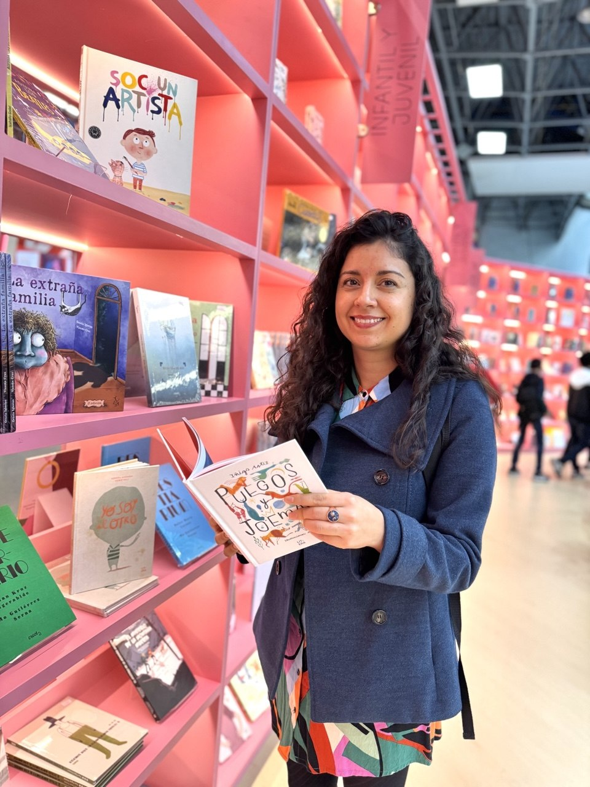

Hi, I'm Laura 👋🏽
Product & UX Designer with 7+ years of experience crafting digital products for SaaS, B2C, and B2B companies — bridging user needs and business goals from discovery to delivery.

A bit about me
I love reading — naaaa, I'm not, at least not as much as I'd like to. I just thought this photo was a good balance between professional and self-expression, and I like its human touch. No edition needed.
I'm a Product Designer with a background in EdTech, legal tech, health tech, and service design. I believe that great design is not just about how things look — it's about how they work and how they make people feel.
Over the years, I've worked with startups, agencies, and in-house teams to ship products that solve real problems. I'm passionate about turning complex systems into simple, intuitive experiences that users love — and that drive business impact.
Beyond design, I really enjoy painting my apartment walls (it's getting full of flowers 🌺) and taking care of my plants. I have a turtle named Gophyn — she was a present for my daughter, but between you and me, I think I bought her for myself. I'm introverted, a good listener, and a body language reader. I tend to see the glass half full, I usually remember my dreams, and I love practicality — no drama, but chisme is always welcome. I do read, BTW — I just wanted to clarify that.
What I believe
Design is problem-solving
I start with questions, not screens. Understanding the problem is the first step to solving it.
People first
Every pixel should serve the user. Empathy is not optional — it's the foundation of great design.
Impact matters
Design without results is just art. I design for business outcomes and user satisfaction.
What I bring to the table
Experience
- 7+ years — Product & UX Design
- EdTech, Legal Tech, Health Tech — B2C & B2B
- SaaS, Marketplaces, Service Design
- Design Systems & Component Libraries
- UX Research & User Testing
Skills
- Product Strategy — Discovery, Roadmapping, OKRs
- UX Research — Interviews, Surveys, Usability Testing
- UI & Prototyping — Figma, Claude
- Design Systems — Component Libraries, Documentation
- Growth Design — Conversion Optimization, CRO
Let's build something great together.
If you have a project in mind — or just want to connect — I'd love to hear from you.